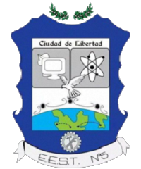

Estudios / Descripción del Programa
Perfil profesional y salida laboral
El Técnico en Informática Profesional y Personal estará capacitado para asistir al usuario de productos o servicios informáticos brindándole servicios de instalación, capacitación, sistematización, mantenimiento primario, resolución de problemas derivados de la operatoria, y apoyo a la contratación de productos o servicios informáticos, desarrollando las actividades descriptas en el perfil profesional y pudiendo actuar de nexo entre el especialista o experto en el tema, producto o servicio y el usuario final.
